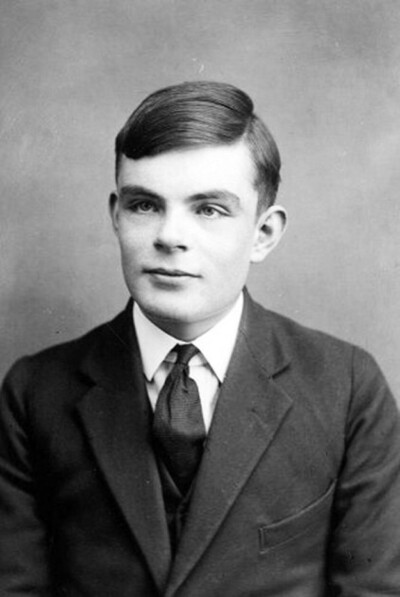
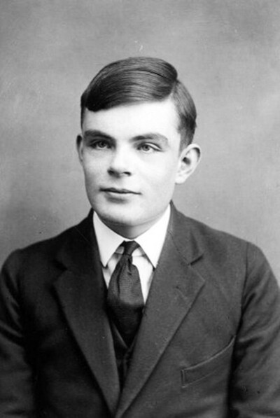

Turing will live forever
 

在20世纪中叶，一个名叫艾伦·图灵的英国数学家、逻辑学家和密码分析家，以其在计算机科学和人工智能领域的开创性工作而闻名。图灵的故事与人工智能的发展紧密相连，因为他提出了一个具有里程碑意义的概念——图灵测试。
故事发生在二战结束后不久，图灵在曼彻斯特大学工作，他构想了一个实验，用以判断机器是否能够展现出与人类相似的智能行为。这个实验后来被称为“图灵测试”。在这个测试中，一个人通过键盘和屏幕与两个隐藏的对话者交流，其中一个是人类，另一个是机器。如果这个人无法区分哪个是人哪个是机器，那么这台机器就可以被认为具有人类水平的智能。
图灵的这一理论，为后来的人工智能研究奠定了基础。他不仅提出了机器智能的可能性，还激发了无数科学家和工程师去探索如何让机器模仿人类的思维和行为。
随着时间的推移，人工智能领域经历了多次起伏，但图灵的思想始终如一地影响着这个领域。到了21世纪，人工智能技术取得了巨大的飞跃，机器学习、自然语言处理和神经网络等技术的发展，使得机器在某些领域的表现甚至超越了人类。
在这个过程中，图灵的名字被用来命名各种奖项和会议，以纪念他对人工智能领域的贡献。图灵的故事成为了人工智能历史上的一个传奇，他的理念和愿景激励着一代又一代的科学家和工程师，不断推动着人工智能技术的边界，向着更加智能、更加人性化的方向发展。